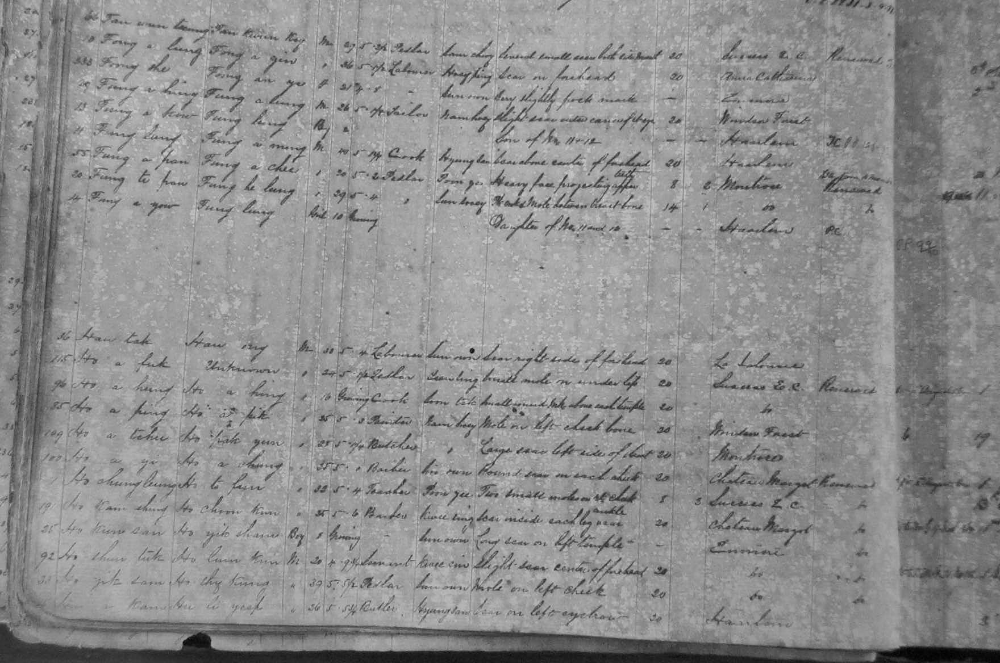
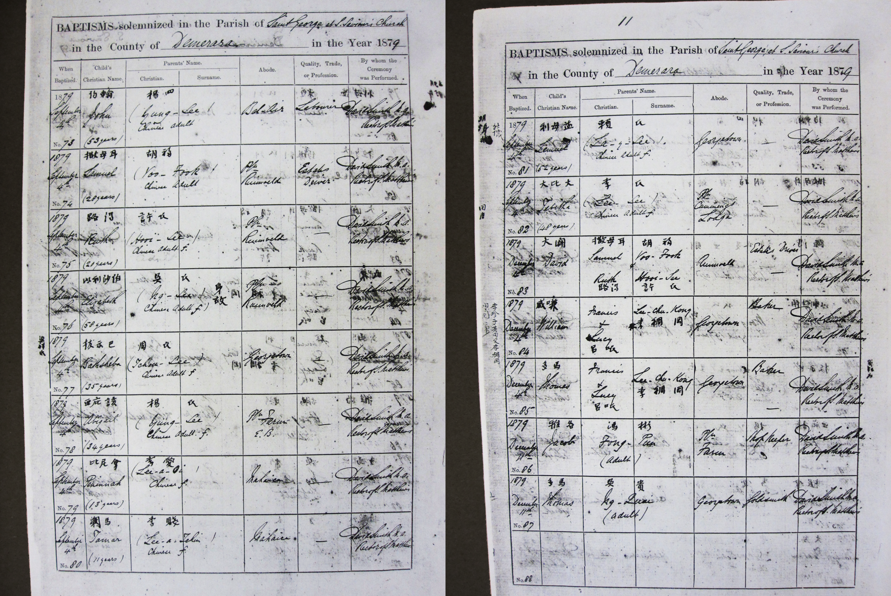
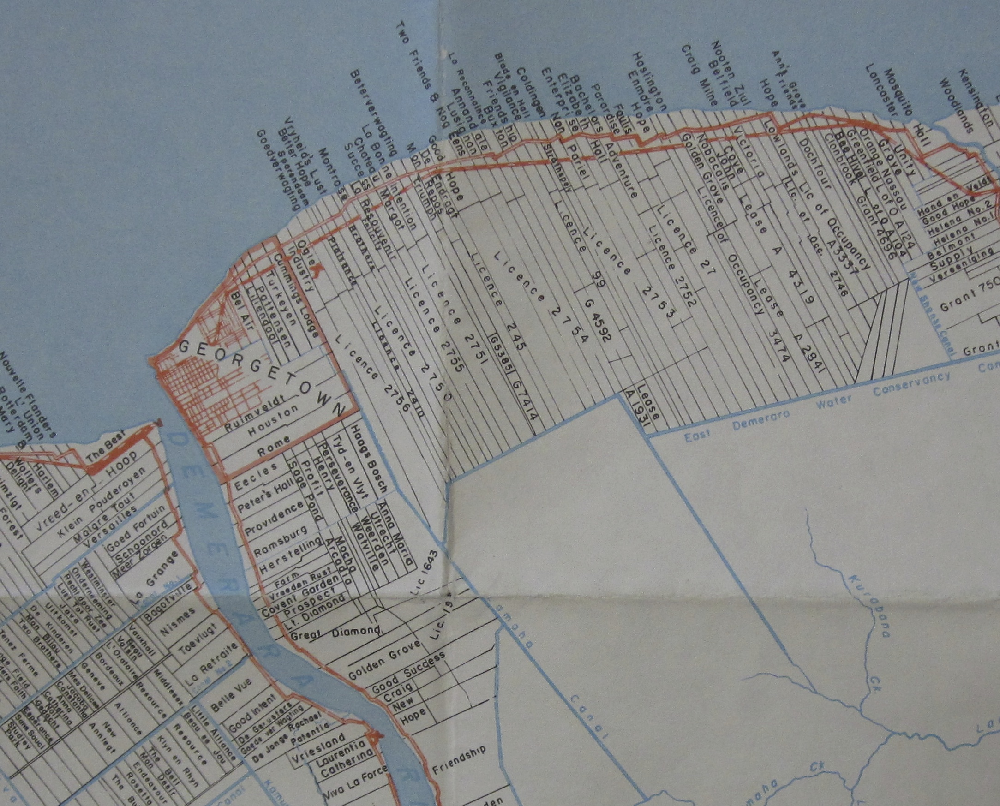
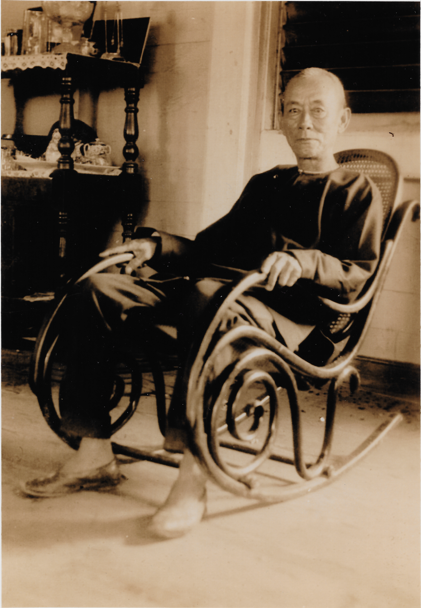
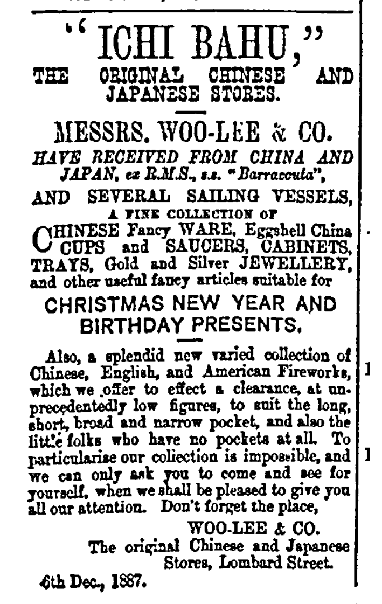

Web exclusive essay | Printable version (PDF)
© 2020 Stanford University Chinese Railroad Workers of North America Project
Laura Hall
This is the story of two Chinese immigrants who arrived in British Guiana in the 1860s. Their tale is not typical but it is not unusual either. They happen to be my maternal great great grandparents, Jacob Fung-A-Pan and Abigail Yung She who migrated from South China to the colony of British Guiana to start new lives on the sugar plantations. For many years they were simply the first names on the first page of a 44 page genealogical chart compiled by Trev Sue-A-Quan. Recently I had the unexpected luck of finding their two names occurring many times in the pages of the Daily Chronicle thanks to the digitization of that newspaper in a searchable format. Misfortune brought their lives into the pages of the newspaper, Jacob was insolvent and Abigail was murdered. However their adversity provides a window into their lives in British Guiana, now Guyana, over a century ago.
Arrival in The New World
The Whirlwind arrived in Georgetown, Guyana on March 11, 1860 after a long trip from Hong Kong carrying 304 men, 56 women, 7 boys, 4 girls and one infant.1 Among the single men was a 20 year old man, Fung A Pan, number 55 in the Register of Chinese Immigrants, one of 28 immigrants (25 men and 3 women) on board the Whirlwind who came from Poon Ye.2 He was described as a pedlar, 5 feet and 2 inches in height, with a “heavy face and projecting upper teeth.” His home village was listed as Poon Ye in China and his father’s name was Fung A Chee. Most of the migrants elected to take a $20 advance on their wages but Jacob took only $8 and assigned $2 per month of his wages to be paid to his parents in China.3

Fung-a-Pan gave his occupation as “pedlar” which was how almost a third of the men on board the ship described themselves. Most likely it signified that they made a precarious living by selling things. The other men on board had a wide range of occupations, an artificial flower maker, a servant, a butcher, a silversmith, a cowherd, a sailor, a teacher and so on. One of the gripes of the planters in the colony was that the Chinese who were sent were not agriculturalists but the “scourings” of the city streets. The Emigration Agent in south China pointed out that in the rice growing areas of south China most of the agricultural labor was done by the women, children and elderly with other members of family only joining in for the harvest. In fact, land was scarce in south China and it was difficult to maintain a family by farming alone. Most households would have also produced handicrafts and non-agricultural goods and these would be taken by the men to sell in the urban areas. Had they been thriving agriculturalists they would not have felt compelled to emigrate half way around the world to a strange land.4 The other considerations driving emigration from China were the Taiping Rebellion, a civil war that consumed southern China between 1850–1864, the disruption of the Opium Wars and Hakka-Punti clan wars which resulted in great social upheaval and the death of millions of people.
The arrival of the Whirlwind created quite a stir in Georgetown as it was the first ship with Chinese women on board. The previous five ships had carried only men and had suffered high rates of mortality, while the Whirlwind’s passengers all survived the trip in good health. The men and women were assigned to 12 different plantations. Plantation Montrose on the East Coast of Demerara received a contingent of 54 men. Fung-a-Pan and 7 other men from Poon Ye were among them.
Fung-a-Pan’s future wife, Yung She arrived in Georgetown about a year later on board the Claramont. The ship departed Hong Kong January 1st, 1861 and arrived at Georgetown 103 days later on April 13th. There were 282 passengers on board, of whom 87 were women, a larger percentage of women than on most of the ships. According to the Register number 1264, Yung She, was a 17 year old female who traveled as the wife of the interpreter, 19 year old Chow-A-Ming. Women were not under any obligation of indenture, neither was Chow-A-Ming, as he a highly valued skill.
At some point in the years after arrival the couple, Chow-A-Ming and Yung She, were uncoupled. The relationship on the ship may have been one of convenience, as male immigrants received a bounty if they brought a wife with them. Chow-A-Ming seems to have remained in the colony and is listed in the 1870 Blue Book for British Guiana as the Interpreter at the Immigration Office, appointed on June 1st 1866 at a salary of £100.
By 1862 or early 1863 Yung She and Fung-A-Pan met and soon started a family. Their marriage does not appear in any of the church records as they were not baptized until 1879 at St. Saviour’s Chinese Church in Georgetown. In September Yung She took the name Abigail and in December Fung-A-Pan took the name Jacob.

Between 1863 and 1886 they had eleven children, 9 of whom lived to adulthood: Philip Fung, Isaac (Fung Teen Young), Mary Jane (Aliku m. to David Foo), Frederick (Fung A Yow), Abraham (Fung A Tsoi), Joseph/Walla (Fung Cow), Cecilia (Yuku m. to Gabriel Hugh A Choi), William Jacob Fung and Jacob Fung.5
This might have been the extent of our knowledge of these two distant ancestors who braved the long voyage to “Demerara” but for Jacob’s business decisions and Abigail’s chance encounter with a murderous fellow countryman.
Jacob The Shopkeeper
After his arrival on the Whirlwind in 1860, Jacob Fung-A-Pan served 2 terms of indenture, which he completed by 1870. For most immigrants there were few opportunities for work outside of the sugar estates. Some men went to the interior and took a chance with the mining industry. For the majority who chose to remain on the coast near the towns and estates, shop keeping was one of the few means of making an independent living once their terms of indenture had ended. The laborers relied on the small shops on the estates to provide them with necessities, food provisions and of course alcohol. At that time, the Portuguese, who were brought to the colony in the 1840s, were the predominant owners of retail and provision shops as well as the rum shops throughout the colony.
Gradually the Chinese also entered the shop keeping business at all levels. The more successful among them established import businesses and became wholesale merchants located in Georgetown and New Amsterdam. They supplied the smaller shopkeepers and often extended credit, especially to their fellow countrymen. However, when the indebted shopkeeper failed to keep up with payments, foreclosure and bankruptcy soon followed. The newspapers of the period are filled with lists of insolvencies and subsequent Transports of business licenses from one immigrant to another.
By the 1880s Jacob had acquired shops at Providence and La Grange on the East and West Banks of the Demerara River respectively. He started the La Grange shop with over $3000 worth of stock. In 1886 he acquired the license for a third provision shop at Plantation Success on the East Coast near Plantation Montrose where he had served his indenture followed by a fourth shop at Plantation Enterprise on the East Coast in 1890. The shops were the kind commonly found on the estates, provision shops where the workers and their families could buy basic foodstuffs such as rice, sugar and flour. He was also licensed to sell “Wine and Malt liquors” at these establishments.6

Managing four establishments scattered from the East Coast to the West Bank of the Demerara could not have been easy. He enlisted his sons to run his shops, most notably Isaac, the second eldest. He also employed other Chinese men. At Plantation Success he employed Ho-A-Yow and Ho hired one Yip Pow as a cook for a few weeks, an insignificant hiring and firing that would have great significance for the Fung family a few years later. Jacob was apparently a generous man, doing well enough by 1885 to loan a man named Samuel Seth $500 to open a shop despite the fact that only a few years earlier Seth had declared bankruptcy leaving $8000 of unpaid debts. Seth’s new business did not fare any better and in July 1887 he declared bankruptcy for a second time. He managed to pay off two other creditors, but not Fung-A-Pan.
In 1886 Jacob made a critical decision when he entered into partnership with two other Chinese immigrants, Job Fung-A-Ling and Low-A-Yan, investing several thousand dollars of his own money in the venture. Job Fung-A-Ling and Jacob both attended St. Saviour’s Chinese Church in Georgetown. The two men also came from the same county, Poon Ye, in South China however they do not appear to be related.7 Jacob may have met the third partner, Low-A-Yan, at Plantation Success, the estate where Low served his indenture and where Jacob had a shop.8 Together the three men opened a retail business, Low-A-Yan & Co., General Merchants, on Lombard Street in Georgetown where many other Chinese businesses were located. Cook shops, tailors, jewelers, laundries, opium, rum and provision shops, butchers and bakeries were crowded into a few blocks near to the wharves. For a few years the three men carried on business in the Chinatown district buying wholesale from a larger Chinese importer, Hing Cheong & Co., which was also the supplier for Jacob’s shops on the estates at La Grange and Success. Hing Cheong & Co. was owned by a local merchant, Chow-Wai-Hing, and his partners in Hong Kong.
At Low-A-Yan & Co. Jacob’s sons Isaac, Frederick and Joseph were the main employees along with the aforementioned Samuel Seth. The timing for the venture was unfortunate. The sugar industry, which was the basis of the economy, was struggling due to the competition from cheaper beet sugar in Europe. In the years after it opened for business Low-A-Yan & Co. continued to accumulate more debt, and the three partners were also cumulating individual debts in the shops that they each owned throughout the colony. The sudden death of Low-A-Yan on June 8th, 1892 could not have come at a worse time. His widow, Jane Low-A-Yan, immediately notified the other two partners that the estate of Low-A-Yan was no longer a partner in the business though it would pay its share of the losses. This effectively ended the business as all three partners were heavily indebted to Hing-Cheong & Co, and other wholesalers and importers in the colony. Each of the 3 partners owed about $3800 to Hing-Cheong & Co. Fung-A-Pan was also in debt to Hing-Cheong & Co. for the stock in his shops on the estates at La Grange and Providence.
On August 13th Jacob Fung-A-Pan was judged to be insolvent as was Job Fung-A-Ling. Both men began the long process of liquidating their assets in order to pay their debts. Their investments, life insurance, personal belongings, properties and stock-in-trade for the Low-A-Yan partnership were put up for sale. In November the Administrator General announced the sale of the “Estate of FUNG-A-PAN, an Insolvent. One half of the concession or lot number 36, situate in Werk-en-Rust district, in the City of Georgetown, County of Demerary and Colony of British Guiana, with the buildings thereon.”9 This was presumably his home where he lived with his wife Abigail and some of his younger children.
The court proceedings provide some clues to Jacob’s business failures. “Informality” might be the best way to describe the Fung family business practices. Jacob seemed to be removed from the day to day running of the shops visiting them only once a year when stock was taken. In giving evidence Jacob’s son Isaac Fung-Teen-Yong said that when he looked after his father’s business “he never kept any books…When they took stock it was put down on a piece of brown paper which was afterwards destroyed…The shopkeeper at La Grange (his brother Ah-Tsoi or Abraham) used to keep the books but he didn’t know where they were now.” Naturally Isaac’s testimony may have been motivated by a desire to shield his father’s assets from the court. Fung-A-Pan on the other hand asserted that his son Isaac looked after the business and the books. He thought there was a book written in English in which the cash sales and expenditures were recorded but he did not know of the whereabouts of that book as he had recently moved, no doubt as a result of his insolvency.

Not much is known about Jacob after his bankruptcy. His son Isaac was to become a successful merchant in the colony, surely learning a few lessons from his father’s business experiences. About a year after he was judged “insolvent” a greater tragedy struck Jacob and his family when his wife Abigail was murdered.
Murder in the Chinese Quarters
On Wednesday August 30, 1893 around nine o’clock in the morning Jacob Fung-A-Pan’s wife, Abigail Yung She, set out to buy some provisions at Wo Lee & Co. on Lombard Street as she had done countless times before. She put a basket over her arm and was accompanied by a three-year-old granddaughter “Ah-hoo” for the brief outing.

A short time later Jacob heard a commotion in Lombard Street and stepping out to investigate saw a crowd near Pequeno’s rum shop. There he saw his wife Abigail laying on the ground, dead at the age of forty-nine from a stabbing. The little granddaughter also suffered stab wounds but was still alive.10
At first the stabbings appeared to be an indiscriminate act of violence against two victims chosen at random by a Chinese man named Yip Pow. The Daily Chronicle reported that “A large number of the crowd were Chinese who commented on the conduct of their countryman in their own peculiar fashion, but the black population were more boisterous in their remarks, and would have lynched Yap-Pow had he not been instantly removed off the scene.” Witnesses said that Yip had asked Yung She for a penny to buy bread and when she refused he threatened her and grabbed her clothes. She escaped from him and ran to a bridge leading to a store. Yip followed and stabbed her in the neck. She died soon afterwards.
The child was taken to the Colonial Hospital and Yung She’s body was taken to her home. “The husband of the deceased and all the family were in a frantic state of grief, the sobs of the younger children being heart-rending… The family consists of seven sons and three daughters. The husband felt his position keenly at being left with such a large charge. He seems to pursue no particular avocation, and gets the name of being a quiet unobtrusive Chinese”.11
At the inquest and trial that followed, it became evident that in the days previous to the murder Yip had been on a meandering but determined search for Abigail’s husband Jacob Fung-A-Pan who had once been his employer. Yip told several people of his long-standing grudges against Fung-A-Pan but on that day it was Abigail and her grandchild who by chance crossed his path not his former employer.
If Yip Pow had not murdered Abigail Yung She he would have lived and died as one of the thousands of anonymous immigrant laborers who eked out a precarious living in the plantation economy of British Guiana. Once their five year term of indenture ended the Chinese immigrants could sign up for another term of indenture or were free to remain in the colony. They were given $50 in lieu of a return passage to China. Unlike the Indian immigrants, a free return passage to their homeland was not part of their contracts. Yip Pow’s name is not clearly identifiable among the lists of Chinese arrivals and so there is no information as to his origins in China or which estate he was assigned to on arrival in British Guiana or whether he was born in the colony. The newspaper accounts do not mention his age or family. No one appeared in court to testify on his behalf. In the course of the court hearings it was established that Yip held a grudge against Fung-A-Pan but the only time the two had any relationship was a brief period a few years earlier. While Fung-A-Pan may have forgotten the man who he employed very briefly, Yip did not forget Fung-A-Pan.
Sometime in 1891, two years previous to the murder, Yip had been hired as a cook by one of Fung-A-Pan’s shopkeepers, Ho-A-Yow, at Plantation Success. Testifying in court, Ho said that Yip left the job after three weeks due to his rheumatism. He had been paid when he left and Ho asserted that there were no occasions on which Yip was not paid or when he was “imprisoned” by Fung-A-Pan (as Yip had claimed to others). Fung-A-Pan and his family were living in Georgetown at that time, so it is unlikely that Fung himself spent much time at the shop or in direct contact with Yip.12
On August 26,th 1893 the Saturday before the murder, Yip visited a man he knew, Lee-A-Tim, at Peter’s Hall on the East Bank of the Demerara and asked for work. Lee testified in court that he knew Yip well but that the request was unusual because the “accused and I were always enemies.” A number of years before, they had been in a fight at Vriesland, a plantation on the West Bank of the Demerara River. Then last April or May, Yip picked a fight with Lee in an opium shop in Leopold Street on the basis of the earlier fight. Fung-A-Pan, who Lee claimed as a good friend, was not present on either occasion. Lee’s testimony did nothing to enlighten the court about Yip’s motives but did serve to strengthen the suspicion that Yip was not of sound mind. On this most recent occasion at Peter’s Hall there was no fight and no threats from Yip.
A day later on Sunday Yip ran into Frederick Fung-A-Yow on the railway line at Success on the East Coast. Frederick, one of Abigail and Jacob’s adult sons, was now managing a shop at Plantation Success. He stated in court that he knew Yip Pow and used to call him “Appoo” which may be a mistranscription of Ah Pow, a familiar term of address. Frederick said in court that he did not know about Yip’s previous employment with his father. As they walked together Yip asked Frederick for work. Frederick replied that he should ask his father. He did not give him his father’s address as he assumed that Yip knew where to find him. Yip asked for money for food so Frederick gave him a guilder and they parted ways in opposite directions, Yip went in the direction of Mahaica while Frederick continued into town to visit his parents.
The next day, Monday, Yip Pow paid a visit to the Brickdam police station in Georgetown and spoke to John Silas, a Chinese policeman. Silas reported that Yip complained that Fung-a-Pan had told him to kill a Chinese man named Lee-a-Tim, but that “he could not do such a thing.” Silas did not notice anything strange about the complainant but did report the claim to the Sergeant Major. The police did not take any action.
Early on Wednesday, the morning of the murder, Yip Pow went by Ruimveldt Estate on the outskirts of Georgetown to ask the gang driver (a foreman in charge of a work crew) if he had any work but he was told there was none to be had. The driver’s wife, Chan See, testified that she was familiar with Yip Pow as he had worked on the estate a year earlier. Yip told Chan See that Fung-A-Pan owed him two months wages and had “treated him as a madman and locked him up for two weeks.” Yip was insistent that Fung wanted to imprison and kill him. Chan said she saw him return from the fields about nine o’clock. Having failed to get work he set off for Georgetown. Later that day she heard of the death of Yung She.
After leaving Ruimveldt, Yip headed for the Werk-en-Rust neighborhood of Georgetown, “that part of the city where the Chinese element abounds. There are numbers of stores in the street occupied by this race, which are generally known as the Chinese Quarters”. He was observed turning into Lombard Street from Harel Street by William Edmond, a marshal who lived nearby. Harel was a small side street just around the corner from High Street where Jacob and Abigail lived with their family.
After buying a few things from Wo Lee & Co. Abigail Yung She was heading home along Lombard Street toward Leopold Street with her basket in one hand and her granddaughter’s hand firmly clasped in the other. William Edmond knew Fung-a-Pan’s family and recalled watching the playful little girl laughing and skipping alongside her grandmother. As Abigail passed Pequeno’s Rum shop Yip Pow approached her, perhaps recognizing her as Fung’s wife, and asked her for a penny to buy bread. Abigail refused his request. Since the bankruptcy of Low-A-Yan & Co. there would have been little to spare in their household budget. William Edmond heard Abigail shout something in Chinese and saw that the child had fallen and her grandmother was fending off Yip with her right hand. Other witnesses said the child had been stabbed first. Yip then stabbed Abigail in the neck through the Chinese jacket that she was wearing. She managed to get up and run with the child in her arms with the knife still lodged in her neck pursued by Yip. After Abigail fell on the bridge leading to Pequeno’s shop, Yip caught up and was seen tugging at her trying to retrieve the knife that he had plunged into her neck. An elderly Chinese man came forward and took the child from Abigail as she fought off her assailant. Meanwhile Yip finally extracted his knife from Abigail’s body, saw that it was bent, calmly threw it into the dry drain and walked away. The doctor later testified that Yip had stabbed his victim so hard that the knife bent as it hit her spinal column.
During the trial Yip Pow only spoke once. It was at his own request, after the judge gave him a statutory caution. Yip announced to the court that “Fung-a-Pan told me to kill one Tou-Shan-Yan. Fung-a-Pan has plenty of money. I don’t want to say anything more here. I’ll talk before the judge. I have not witnesses.” No one could make any sense of the statement. Evidently Yip was not cognizant of the fact that Fung-a-Pan had been declared “an insolvent” by the Administrator General just one year earlier and had been forced to liquidate his possessions in order to pay off creditors.
A month after the trial the Supreme Criminal Court of British Guiana announced that “Yip-Pow was found guilty of the murder of the Chinese woman, Yong-She, and was sentenced to be executed on Saturday, the 28th inst.” 13
This was not the end of the matter for Yip Pow. A day later an editorial appeared in the Daily Chronicle arguing that had a similar crime been committed by an Englishman of similar state of mind in the United Kingdom, the jury would have easily been persuaded that his actions were those of a mad man and therefore he was not responsible for his actions and this would have mitigated the sentence. “Of course we are not disposed to ignore the fact that the Celestial mind is now, as it has ever been, a perplexing problem to the European understanding,” but in the absence of a motive “it is quite reasonable to consider the theory of madness and non-responsibility.” They pointed to witnesses’ testimony that would enable “anyone gifted with ordinary perception to discern that Yip-Pow was subject to delusions”.14 An editorial a fortnight later congratulated the Governor on the commutation of Yip’s sentence and noted that since sentencing he had been under observation by experts who judged him insane.
The Daily Chronicle briefly noted on November 5th that Yip Pow was brought to the Berbice Insane Asylum after commutation of the death sentence.
Thus Jacob Fung-A-Pan at the age of 53 found himself widowed and destitute with at least five children under the age of 14 still living at home. It is likely that the older adult children helped care for their siblings and their father. His date of death is not known but oral stories suggest that he lived until around 1906 or 1907. The only parts of Jacob and Abigail’s lives in colonial British Guiana that are officially recorded suggest lives marked by tragedy but this was not the sum of their lives. Then, as now, newspapers generally only recorded events of note, and those events were usually not the happy ones. In the early years of their marriage Jacob established himself as a successful shopkeeper, Abigail gave birth to eleven children, nine of whom survived to adulthood and became parents in turn to large families. Their descendants now number in the thousands and include not only Fungs,15 but also branches of the Luck, Lam, Foo, Lee, Phang, Fung On, Cham-A-Koon, Sue-A-Quan, Alberga, Ying, Hugh and many other families. Since the 1950s intermarriage with non-Chinese has become more common and acceptable and recent generations identify themselves in diverse and complex ways. Like their ancestors Jacob and Abigail who boldly made a new start in an unknown country, the Fung descendants now live in every corner of the globe, from Australia and Singapore, to Canada, the U.S.A., U.K. and Europe, and of course Guyana.
Sources
Cecil Clementi. The Chinese in British Guiana. The Argosy Press, Georgetown. 1915.
The Daily Chronicle. Georgetown, British Guiana. 11/5/1881 to 12/29/1897 accessed online in the World Newspaper Archive.
Marlene Kwok Crawford. Scenes from the History of the Chinese in Guyana. Published by author. Georgetown, Guyana. 1989.
Laura Hall. The Chinese in Guyana: The Making of a Creole Community. Ph.D. dissertation. University of California, Berkeley. 1995.
Trev Sue-A-Quan. Cane Reapers: Chinese Indentured Immigrants in Guyana. Riftswood Publishing, Vancouver, B.C., 1999.
Trev Sue-a-Quan. “The Chinese in Guyana: Their Roots” Website. http://www.rootsweb.ancestry.com/~guycigtr/
Notes
1 Details of the recruitment in China and the dispersal of immigrants in Guyana can be found in the following publications: Cecil Clementi. The Chinese in British Guiana. The Argosy press, Georgetown, 1915
Marlene Kwok Crawford. Scenes from the History of Chinese in Guyana. Pub by author, Georgetown, Guyana, 1989.
Trev Sue-A-Quan. Cane Reapers: Chinese Indentured Immigrants in Guyana. Riftswood Publishing, Vancouver, B.C., 1999.
2 The Chinese Register, Guyana National Archives. Though the designation in the Register heading is designated “village” it is more likely that the migrants gave the name of the nearest large town or the district within which they were located rather than specific village names. Poon ye (rendered variously in English as Poon yee, Pan Yu and Poon Yu, and Panyu in standard pinyin) was the name of one of the three districts within the San Yi or the three counties in Guangdong province (the other two were Nanhai and Shunde) that provided many of the emigrants for British Guiana, as well as California and other parts of the Americas.
3 All the details of immigrant number 55 (Fung-a-Pan) on the Whirlwind, and number 1264 (Yung She) on the Claramont, are taken from the Chinese Register which contains records of all the passengers on ships from China between 1853-1861. See Trev Sue-A-Quan “The Chinese in Guyana: Their Roots” http://www.rootsweb.ancestry.com/~guycigtr/
4 Laura Hall. The Chinese in Guyana: The Making of a Creole Community. Ph.D. dissertation. University of California, Berkeley. 1995. Chapter 5 discusses the factors driving emigration.
5 Trev Sue-A-Quan chart for “Descendants of Jacob Fung-A-Pan” 19 May, 2012. It was a common practice in Guyana to hyphenate Chinese names to form a single surname.
6 Details relating to Jacob Fung-A-Pan’s businesses are taken from the Daily Chronicle, Georgetown, British Guiana, 1881-1897.
7 Daily Chronicle Dec. 5, 1896. Fung-A-Ling is listed on a Transport for a property as Chinese Immigrant No. 3255 ex Ghengis Khan, 1862. In Trev Sue-A-Quan’s website the database for passengers lists shows Fung-A-Ling to be a 20 year old servant from Poon Ye.
8 Low-A-Yan arrived at the age of 27, on the Queen of the East in 1865 from Tai Leung. His occupation is given as “comb-maker.” See Trev Sue-A-Quan’s website.
9 Daily Chronicle, November 19, 1892.
10 Details of the murder are taken from the news account and ensuing court case reported in the Daily Chronicle, Georgetown, British Guiana.
11 “Murder in Charlestown,” Daily Chronicle August 31, 1893.
12 The events leading up to Abigail Yung She’s murder are taken from the Inquest reported September 5, 1893, and the criminal trial, reported September 18, 1893 in the Daily Chronicle.
13 Daily Chronicle, October 10, 1893.
14 Ibid, October 11, 1893.
15 Trev Sue-A-Quan chart for “Descendants of Jacob Fung-A-Pan” 19 May, 2012.